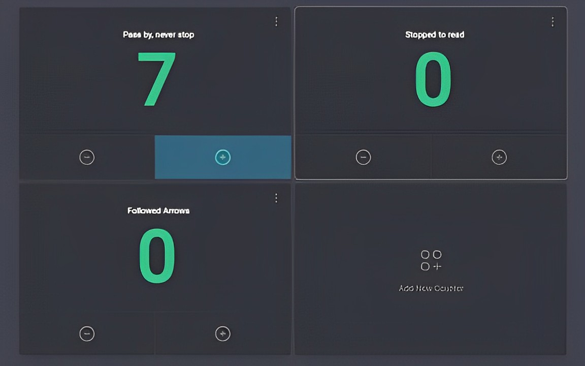

Usability Testing
We spent the day working on the project’s website and finalised the design of arrows, which we printed and used in our usability testing in the evening.
We. Are. Exhausted. 😪
Unfortunate to say, but our experiment today may have been a bust. We walked over to the mural to set up our paper plaque and arrows, and began the observation. The experiment was conducted between 5:30 to 6:30pm as that would be peak hour, when people are making their way home from work and are not in as much of a rush as they are during the rest of the day.
The test conditions were as follows:
Test 1:
Plaque with an arrow on it was placed at the mural’s wall, with its centerpoint at a height of 1.37m.
2 more arrows were placed along the way to the Annexe, also at a height of 1.37m where possible.
Test 2:
Plaque, with a separately printed arrow was placed at the mural’s wall, with the centerpoint height of the plaque at 1.37m, and the arrow right below it.
2 more arrows were placed along the way to the Annexe, also at a height of 1.37m where possible.
Controls:
Arrows and plaques were printed, in colour, to fill an A4 sheet.
30 minutes was given to observe each test case
Measurements:
1. the number of people who passed by the pavement next to the mural
2. number of people who stopped to read the plaque, and
3. the number of people who followed the arrows.
Results:
Only 7 people passed by the mural in the span of the first 30 minutes (test 1), and none during test 2. As such we are unable to conclude on the efficacy of the arrows nor the positioning of the first arrow at the site of the mural. Reasons for the low footfall in the area could include that it was drizzling and windy throughout the time that we were there, and that people who pass by the mural regularly won’t even bat an eye unless the plaque is prominent.
This made us refocus on who the target audience of the arrows and plaque are. Keeping in mind that the geocache location will be set to the Annexe building instead of the mural, the plaque and arrows component will target only passers-by, attempting to bring them on a detour to the Annexe building.
However, we realised that if passers-by in the area were mostly residents, it is unlikely that the arrows would bring a consistent flow of people to the Annexe building. If the passers-by are mostly residents, they may already know about the Annexe too and are less likely to follow the arrows unless the reward is attractive enough. Even then, it would likely only bring them to the Annexe once.
Additionally, if passers by have seen the mural multiple times before, they may not notice the addition of a plaque and thereby would fail to notice the arrow on the plaque as well.
As such, 2 options we can think of currently is to:
1. Drop the idea of arrows leading people to the Annexe
2. Keep the arrows idea, but knowing that it may only attract an audience of tourists, short-term visitors or new residents in the Partick area
We still believe that the plaque would be of value to the Annexe’s goal of sharing the stories behind such projects involving the community. However, it may be poorly received during this experiment as the mural was painted almost a year ago, and we are only now placing a plaque there. Future works could incorporate the idea of a plaque and audio story, shared through a QR code on the plaque or a physical speaker, to get a more accurate sense of the plaque’s significance in sharing the story behind such projects with the public.
Tomorrow, we will meet the Dreams and Aspirations group (one of the communities at the Annexe, whose aim is to help people turn their interests or passions into something great for the Partick community). Our task here is to explain our solution to them, to set up the groundwork for handing over the project by the end of this week.